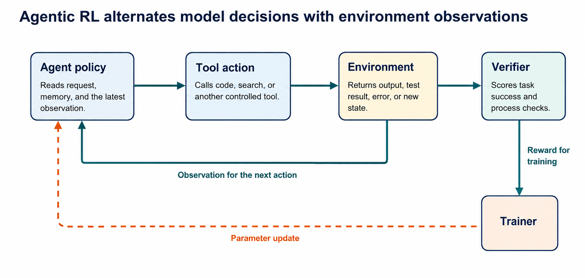
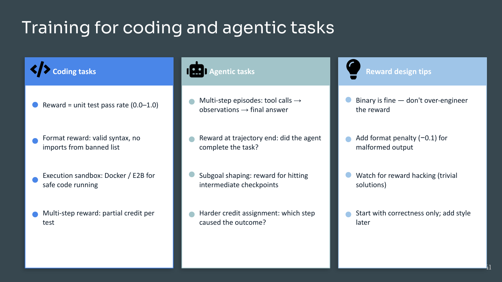

5 RL from tests and tool results
PPO and GRPO change the model using scores assigned to its attempts. Those scores need not come from a learned reward model. A coding task can run the proposed program against tests, and a mathematics task can compare a final answer with a known result. These checks make many attempts affordable to score, but training is useful only when passing them reflects the task we actually want solved. A tool-using model adds another requirement: the training record must preserve the actions and returned results that led to success or failure.
- Reinforcement Learning with Verifiable Rewards (RLVR): Reinforcement learning in which a program or rule checks a generated result and supplies the reward. Examples include matching a known answer, passing unit tests, or completing a task in a tool environment. Checking many new attempts can be cheaper than collecting human ratings, although running models, tests, and tools still consumes computation.
5.1 Rewarding answers with explicit checks
Online training needs a reward for each sampled attempt. For qualities such as clarity, a person or learned preference model may be the appropriate judge. For a program’s return value or a required output format, an explicit test can give a more direct answer. The choice depends on which part of success can actually be checked.
RLVR changes how the reward is obtained, not the policy-update rule. PPO or GRPO can use a verifier’s score just as it can use another task score. Writing and testing the verifier is therefore part of reward design: a consistent check can still consistently reward the wrong solution.
JavaScript Object Notation (JSON) is a text format for structured records made from objects, arrays, strings, numbers, booleans, and null values. A schema validator can check JSON structure and field types, but not whether the content is factually correct.
The three common judges provide different kinds of feedback.
Human preference: A reviewer chooses the clearer answer. This signal is expensive and subjective, but can evaluate qualities that are difficult to formalize.
Learned reward model: A transformer predicts a preference score. It scales to fresh outputs, but a policy can exploit model errors.
Verifier (RLVR): Tests pass, JSON output validates, or an answer matches ground truth. This rule is scalable and less subjective, but a policy can exploit an incomplete specification.
RLVR does not eliminate reward hacking.
Weak test suite: A coding model can learn visible cases while failing hidden inputs.
Lucky final answer: A mathematics model can receive full outcome reward after an unsupported guess.
Schema shortcut: A tool agent can produce valid-looking structured output while skipping the required work.
Verifier design must close the loopholes that matter for deployment. Hidden cases, action rules, resource limits, and checked intermediate results are useful only when they represent real task requirements.
5.2 Testing the verifier for loopholes
A program may pass the example test and fail on an empty input, run indefinitely, or read a file it was not allowed to access. These failures require different controls. Tests check the required result; restrictions on execution limit what the program can do while obtaining it. Neither should be mistaken for the other.
A verifier must state what it can observe and which requirements remain outside its checks. A coding verifier normally combines several checks, each closing a different loophole.
Outcome check: Hidden unit tests validate return values, reducing overfitting to visible examples or lucky guesses.
Constraint check: The execution environment enforces an explicit policy for network, filesystem, and process access. A sandbox is an isolated environment configured to restrict those operations; an import-name check alone does not provide isolation.
Resource limit: A timeout and memory cap constrain execution so the reward does not favor an impractically expensive solution.
Process check when needed: An intermediate tool action reaches a required checkpoint, giving denser credit when final-only reward is too weak.
Before optimization, construct adversarial trajectories that pass an incomplete verifier while violating the intended task. Accept the verifier only when those trajectories fail for the intended reason and held-out cases still represent the behavior required in deployment.
5.3 Learning through tool interactions
The checks above can score a completed answer. In a tool-use task, however, the model also receives information while working. A test runner may reveal the first failing assertion; the model can then edit the relevant function and run the tests again. The next action depends on the returned result, so the training example is a sequence of interactions rather than just a prompt and final answer.
- Agentic RL: Reinforcement learning over a sequence of model actions and environment results. The application assembles the model’s input from the user request, available action history, tool outputs, and any stored memory it includes. The environment may also contain state that the model cannot observe, such as hidden tests or files it has not read.
After each policy action, the environment returns a result that becomes part of the next model input. Because that result changes the next decision, training records the full sequence rather than only the final answer.
The ordered record of these interactions is a trajectory. A final reward can train from a whole trajectory without a separate score for every action. Intermediate scores are optional: they can make useful progress easier to identify, but they can also reward a shortcut such as repeatedly passing an easy check. In either case, the application must enforce tool restrictions independently of the reward.

The same environment event has two different uses: its observation informs the next action, while a verifier can turn selected results into reward.
Agentic rewards can combine final task success with partial credit for intermediate checkpoints, using the process-supervision idea introduced for reasoning in Chapter 4. The task defines which intermediate events deserve credit. A coding environment can run tests, while an agent benchmark can validate a sequence of tool observations and actions; execution restrictions still have to be enforced independently.
Credit assignment must follow the trajectory, not only its last string. Store each state, action, observation, and checkpoint result in order. A final success reward can be attached to the terminal transition, while partial checkpoint rewards can be attached when the agent discovers the failure, produces a valid patch, or recovers from an error. This record lets PPO, GRPO, or a custom policy-gradient loop tell which decisions led to success and which tool calls consumed cost without helping.

Figure 5.2 preserves the course slide’s coding-task examples. Advice such as using a binary reward or adding style checks later describes possible choices for those tasks, not a universal rule. The checks must test the behavior that matters, not merely a convenient proxy such as valid syntax or a final JSON shape.
Agentic RL changes each part of the ordinary LLM rollout.
State: Instead of only a prompt plus generated prefix, the state includes prompt, history, tool outputs, and retained memory.
Action: Instead of only the next token or a completion, the policy may choose a tool call, arguments, or a stop decision.
Observation: A normal completion often has no explicit mid-sequence environment result; an agent receives one after each tool action.
Reward: Instead of only completion quality, the task can score final success plus process and tool checks.
Example: partial trajectory reward
A coding agent discovers the failing test, produces a valid patch, and passes the target and full test suite.
Inputs and measurement
The task environment and verifier return boolean outcomes for discovery, patch validity, and end-to-end tests. This example scoring rule assigns weights 0.25, 0.25, and 0.50 to those three checks.
Scale: The three values are task-defined reward weights, not probabilities; this scoring rule has a maximum of one point.
Calculation
\[0.25 + 0.25 + 0.50 = 1.00\]
Interpretation: The trajectory receives score 1.00. The 0.25 and 0.25 parts credit useful progress, while 0.50 reserves half the reward for the final end-to-end requirement; validate those weights on held-out repair tasks.
- Evaluate the trajectory: A higher final-answer score is not enough if it comes from unnecessary tool calls, an invalid shortcut, or brittle dependence on one environment. Keep held-out tasks and hidden checks separate from the training reward.
Agent evaluation records six complementary results.
Task success: Whether the environment reaches the required final state.
Verifier pass rate: How often explicit outcome and constraint checks pass.
Tool calls: How many external actions the policy consumes per task.
Wall-clock cost: Elapsed time and compute or service cost for the trajectory.
Unsafe actions: Attempts that violate allowed-action or resource rules.
Recovery: Whether the policy detects and corrects an intermediate failure.
5.4 Connecting tools, checks, and training
The trajectory separates what the model saw, what it requested, what the tool returned, and how the request was scored. The software must preserve those distinctions. A blocked action still needs a recorded result, whereas an allowed action must run under enforced limits before its result is used for training.
Four software components divide the work for a tool-using update.
Test runner: A system such as
pytestchecks task outcomes.Sandbox: Resource, import, and action rules limit what a tool call may do.
Agent environment: Runs the action and returns the next observation.
Trainer: TRL or a custom PyTorch loop consumes the scalar reward and updates the policy; project code must still implement and test the verifier and environment.
Code 5.1. A guarded tool step produces the next state and training reward.
This is interface pseudocode, not a runnable sandbox implementation. It assumes a task, a policy, an environment, and a verifier with the methods shown. The action is a tool request; the observation is a structured execution or blocked-action result. The step returns a scalar reward and a new model input. The real environment must implement isolation, timeouts, and memory limits before this pattern is used with generated code.
An allowed call to environment.step updates the environment’s stored state, which may include files and execution records. environment.state is that stored state after the call. The returned observation is the result exposed to the model; environment.observe combines it with the available history to construct next_state. A blocked call leaves the task state unchanged but supplies a blocked-action observation. limits_respected reads execution records to confirm whether the run stayed within the enforced limits.
# Guard an agent action, execute it, and construct training reward
state = environment.reset(task) # initial policy input
action = policy.act(state) # proposed tool action
safe = verifier.allowed_action(state, action) # pre-execution rule
limits = environment.enforced_limits(task) # sandbox limits
if safe:
observation = environment.step(action, enforced_limits=limits)
else:
observation = environment.blocked_action_result(action)
tests_ok = verifier.training_tests(environment.state) # reward-only tests
within_cost = environment.limits_respected() # enforced use
reward = float(tests_ok and safe and within_cost) # trainer signal
next_state = environment.observe(observation) # next policy inputnext_state remains separate from the scalar reward because the policy consumes the first value and the trainer consumes the second.
For an illustrative allowed patch that passes the training tests within the limits, the three checks are true and reward is 1.0. If the action is blocked, safe is false and the reward is 0.0, even if the unchanged environment happened to pass its tests. In that case next_state should include the blocked-action result so the policy can choose a different action. This is an expected behavior of the interface, not a recorded execution of these undefined helpers.
State and action:
statecontains the prompt, prior actions, and returned observations available to the policy;actioncan be a token sequence or a tool request.Action guard:
allowed_actionchecks the request before execution. A negative reward after an unsafe action would be too late to prevent the action.Environment result: The sandbox enforces resource limits while
environment.stepruns;observationis the resulting tool output or a structured blocked-action result.Verifier rules:
training_testsand the execution records supply reward components. Tests reused for reward are training tests even when their contents are private.Training signal:
rewardis what an RL trainer consumes, whereasnext_stateis what the policy sees next. A real evaluator may combine checks with partial credit instead of returning only zero or one, but the scoring rule must be stated.Training-verifier tests and held-out tests: Private training-verifier tests may hide their contents from the policy, but repeated reward feedback can still leak information about them. Reserve a separate held-out test set that never produces training reward and use it only for checkpoint acceptance.
Execution guard: Safety and resource rules must be enforced before or during tool execution. Post-hoc scoring is useful for learning and diagnosis but cannot undo an unsafe action or exceeded resource limit.
A production trajectory record preserves the facts needed to reproduce the score and diagnose a failure.
State identifier: Link every model input to the task version, prior action history, retained memory, and environment snapshot.
Action record: Store the generated tool name, validated arguments, policy log probability, and stop decision before execution.
Observation record: Capture structured output, standard output, standard error, exit status, timeout, and resource use without treating them as reward.
Verifier record: Save each check result and reward component separately so a final scalar can be reconstructed.
Environment version: Record sandbox image, dependency versions, permissions, network policy, and tool implementation.
Replay result: Re-run selected traces and held-out tasks after training to test determinism, recovery, safety, latency, and cost.
Agent checkpoint acceptance: Evaluate complete episodes under a frozen environment and verifier version before deployment. Training reward alone cannot establish that the agent is safe, recoverable, or efficient.
Action safety: Attempt prohibited, malformed, and ambiguous tool calls and confirm that pre-execution guards block them.
Recovery: Inject tool errors, timeouts, empty results, and stale observations; check whether the policy recovers without repeating harmful actions.
Task completion: Use held-out tasks that never produced reward and inspect both final success and the sequence of intermediate actions.
Cost and latency: Report tool calls, generated tokens, wall-clock time, retries, and resource-limit failures per completed task.
Reward ablation: Remove or perturb each reward component and verify that success does not depend on an unintended shortcut.